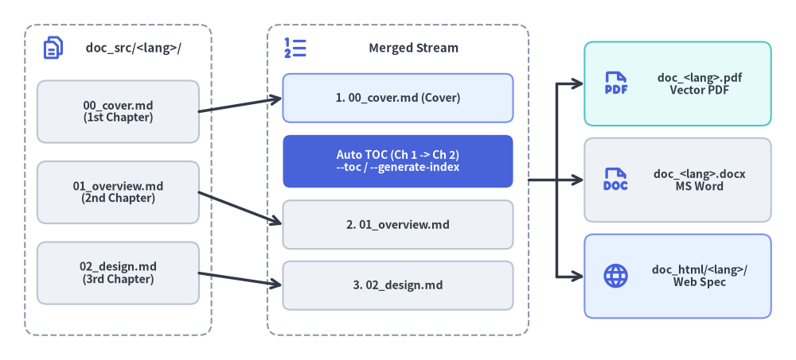
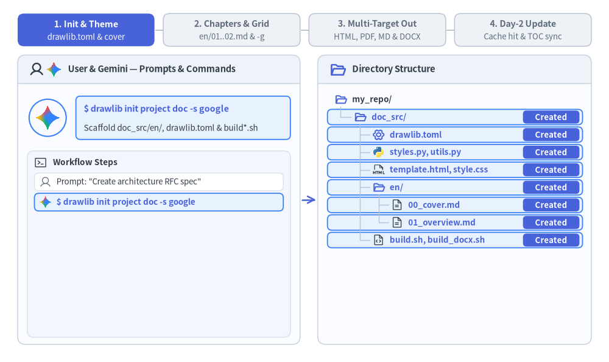

リニアドキュメントプロジェクトガイド (drawlib init project doc)
doc スターターテンプレートは、仕様書、RFC（Request for Comments）、システムアーキテクチャ提案書、ホワイトペーパー、学位論文、公式エンジニアリングレポートといったリニアな技術文書の執筆向けに設計されています。
単一ページの仕様書と複数章からなるレポートを単一のアーキタイプに統合することで、同一の Markdown ソースファイル群から HTML、ベクター PDF、編集可能な MS Word（.docx）、Markdown、および単体の図解画像 を一括コンパイルできます。

Source Code
from drawlib.canvas import save, setup
from drawlib.icons import phosphor
from drawlib.lines import line
from drawlib.shapes import rectangle
from drawlib.styles import Styles
from drawlib.text import text
setup(width=128, height=58)
# Left Container: doc_src/ Lexicographical Source Chapters
rectangle((19, 29), width=30, height=50, style=Styles.MutedDashed.patch(shape_r=2.0))
phosphor.files((8.5, 50.2), width=4.2, style=Styles.PrimaryBold)
text((21.5, 50.2), "doc_src/<lang>/", style=Styles.DarkBold.patch(text_size=10.8))
src_chapters = [
(40.0, "00_cover.md\n(1st Chapter)"),
(27.0, "01_overview.md\n(2nd Chapter)"),
(14.0, "02_design.md\n(3rd Chapter)"),
]
for sy, label in src_chapters:
rectangle(
(19, sy),
width=26,
height=10.0,
style=Styles.Neutral.patch(shape_r=1.5),
text=label,
text_style=Styles.DarkBold.patch(text_size=10.2),
)
# Center Container: Merged Linear Document Stream (--page-break)
rectangle((64, 29), width=42, height=50, style=Styles.MutedDashed.patch(shape_r=2.0))
phosphor.list_numbers((47.5, 50.2), width=4.4, style=Styles.PrimaryBold)
text((66.5, 50.2), "Merged Stream", style=Styles.DarkBold.patch(text_size=10.8))
rectangle(
(64, 42.2),
width=37,
height=7.8,
style=Styles.PrimaryNeutral.patch(shape_r=1.2),
text="1. 00_cover.md (Cover)",
text_style=Styles.DarkBold.patch(text_size=10.2),
)
rectangle(
(64, 32.0),
width=37,
height=8.5,
style=Styles.PrimaryFlat.patch(shape_r=1.2),
text="Auto TOC (Ch 1 -> Ch 2)\n--toc / --generate-index",
text_style=Styles.WhiteBold.patch(text_size=10.0),
)
rectangle(
(64, 21.8),
width=37,
height=7.8,
style=Styles.Neutral.patch(shape_r=1.2),
text="2. 01_overview.md",
text_style=Styles.DarkBold.patch(text_size=10.2),
)
rectangle(
(64, 12.0),
width=37,
height=7.8,
style=Styles.Neutral.patch(shape_r=1.2),
text="3. 02_design.md",
text_style=Styles.DarkBold.patch(text_size=10.2),
)
# Arrows: Source -> Merged Stream
line((32, 40.0), (45.5, 42.2), arrow_head="->", style=Styles.DarkBold)
line((32, 27.0), (45.5, 21.8), arrow_head="->", style=Styles.DarkBold)
line((32, 14.0), (45.5, 12.0), arrow_head="->", style=Styles.DarkBold)
# Right: Exported Linear Deliverables
rectangle((109, 44.5), width=30, height=13.5, style=Styles.SecondaryNeutral.patch(shape_r=1.5))
phosphor.file_pdf((99.0, 44.5), width=4.6, style=Styles.PrimaryBold)
text((112.5, 44.5), "doc_<lang>.pdf\nVector PDF", style=Styles.DarkBold.patch(text_size=10.0))
rectangle((109, 29.0), width=30, height=13.5, style=Styles.Neutral.patch(shape_r=1.5))
phosphor.file_doc((99.0, 29.0), width=4.6, style=Styles.PrimaryBold)
text((112.5, 29.0), "doc_<lang>.docx\nMS Word", style=Styles.DarkBold.patch(text_size=10.0))
rectangle((109, 13.5), width=30, height=13.5, style=Styles.PrimaryNeutral.patch(shape_r=1.5))
phosphor.globe((99.0, 13.5), width=4.6, style=Styles.PrimaryBold)
text((112.5, 13.5), "doc_html/<lang>/\nWeb Spec", style=Styles.DarkBold.patch(text_size=10.0))
# Connectors: Merged Stream -> Deliverables
line((85, 29.0), (89.5, 29.0), style=Styles.DarkBold)
line((89.5, 13.5), (89.5, 44.5), style=Styles.DarkBold)
line((89.5, 44.5), (94.0, 44.5), arrow_head="->", style=Styles.DarkBold)
line((89.5, 29.0), (94.0, 29.0), arrow_head="->", style=Styles.DarkBold)
line((89.5, 13.5), (94.0, 13.5), arrow_head="->", style=Styles.DarkBold)
save()
1. エンドツーエンドのプロジェクトワークフロー
doc プロジェクトは以下の 4 つのフェーズで進行します。すなわち、doc_src/ のスキャフォールディングと共有テーマ／表紙メタデータの設定、-g グリッドプレビューで検証しながら進める番号付き Markdown 章ファイルの執筆、マルチターゲット成果物（HTML、ベクター PDF、Markdown、および必要に応じたオンデマンドの MS Word .docx）へのコンパイル、そして .drawlib/cache.db に支えられた Day-2 の高速な差分更新です。

2. プロジェクトの初期化
drawlib init project を使用してリニアドキュメントプロジェクトをスキャフォールディングします（すべての doc プロジェクトは、単一言語であっても統一された <src_dir>/<lang>/ ロケール構成を使用します）。
# Scaffold standard doc project in current directory (creates 'doc_src/en/'):
drawlib init project doc
# With custom target name, theme, and single or multiple locales (creates 'my_report_src/<lang>/'):
drawlib init project doc my_report -s google -l en
drawlib init project doc my_report -s google -l en,ja
3. ディレクトリ構成と構造
編集対象のソースディレクトリ (doc_src/)
drawlib.toml:type = "doc"、style、および必須の[i18n]セクション（default_lang、len >= 1のlangs、および任意の[i18n.labels]。[project]直下のlangは使用不可）を宣言するプロジェクトマニフェストです。<lang>/(en/00_cover.md,en/01_overview.md,en/02_design.md, ...): 本文と埋め込みdrawlibブロックを含む番号付きの Markdown 章ファイルを格納するロケール別ディレクトリです。各ロケールごとにファイル名の辞書順でソートされて結合されます。styles.py&utils.py: 共有の Python スタイル設定（Colors、Styles、言語フォント。任意のロケール別<lang>/styles.pyによる上書きも可能）および再利用可能な図解ヘルパー関数です。template.html&style.css: ブラウザプレビューおよびベクター PDF 生成に使用される Jinja2 シングルページ HTML レイアウトと印刷対応 CSS（@media print/@page A4）です。_assets/: 静的なロゴ画像、ラスタースクリーンショット、またはカスタム.ttfフォントを格納します（<lang>/内の Markdown 本文からは../_assets/...で参照します）。build.sh& 各種ターゲットスクリプト:drawlib init project docにより実行権限（+x）付きで生成されるマスターオーケストレーター（build.sh）と、モジュール分割された個別スクリプト（build_html.sh、build_pdf.sh、Word.docxエクスポート用のbuild_docx.sh、build_markdown.sh、build_image.sh、serve.sh）です。
生成される出力成果物
doc_html/: 高速なブラウザプレビューや社内 Web ホスティング向けのロケール別結合シングルページ HTML ドキュメント（doc_html/<lang>/index.html、ルートリダイレクトdoc_html/index.html、および共有のdoc_html/images/）です。doc_<lang>.pdf（例:doc_en.pdf）: ヘッドレス Chromium によってロケールごとにレンダリングされる印刷対応の A4 ベクター PDF です。表紙、ローカライズされた自動目次（--toc）、章ごとの改ページ（--page-break）を備えています。doc_<lang>.docx（例:doc_en.docx、オンデマンド生成）:build_docx.sh（drawlib build docx）でロケールごとにエクスポートされるネイティブ編集可能な Microsoft Word ドキュメントです。表紙、ローカライズされた目次（--generate-index）、高 DPI の PNG 図解を含みます。doc_markdown/: 共有の../images/アセットを参照する、ロケール別の GitHub 表示対応 Markdown 章ファイル群（doc_markdown/<lang>/）です。doc_images/: 章ごとに整理して抽出されたスタンドアロンの図解画像です。
注記（
docプロジェクトではnavbar.mdを作成しないこと）:doc_src/やdoc_src/<lang>/内にnavbar.mdファイルを作成しないでください。Drawlib はtype = "doc"とnavbar.mdの不在を判定条件として、各ロケールディレクトリをマルチページのサイドバー付きサイトではなく、結合されたリニアドキュメントとしてコンパイルします。先頭が_で始まるファイル（_outline.mdなど）およびREADME.mdは自動的にコンパイル対象から除外されます。
4. 単一ソースから得られる 5 種類の出力ターゲット
doc プロジェクトは、1 つのソースから 5 つの異なる成果物へコンパイルできます。
| 出力ターゲット | 想定読者・環境 | 主な用途 | ビルドスクリプト / コマンド |
|---|---|---|---|
doc_html/ |
Web ブラウザ | 高速なローカルプレビュー（<lang>/index.html）、Web 公開、社内ドキュメント Wiki |
build_html.sh |
doc_<lang>.pdf |
印刷・配布 | 公式ホワイトペーパー、顧客向け納品資料、ローカライズされた目次付きの印刷用レポート | build_pdf.sh |
doc_<lang>.docx |
共同編集・レビュー | ロケール別のネイティブ編集可能な MS Word ドキュメント（見出し、リスト、表、シンタックスハイライト付きコードブロック、表紙＋目次、高 DPI PNG 図解） | build_docx.sh (drawlib build docx) |
doc_markdown/ |
GitHub・バージョン管理 | レンダリング済み画像リンク付きでの GitHub / GitLab リポジトリ上での直接閲覧（<lang>/*.md） |
build_markdown.sh |
doc_images/ |
プレゼン・チャット共有 | Google スライド、Keynote、PowerPoint、Slack、PR へのドラッグ＆ドロップ貼り付け | build_image.sh |
5. 章の並び順・表紙・自動目次の仕組み
doc プロジェクトではサイドバー用の navbar.md ファイルを使用しないため、Drawlib は各 doc_src/<lang>/ 内のすべての .md ファイル（README.md と _ 始まりのファイルを除く）を単一のリニアドキュメントに結合して doc_html/<lang>/index.html、doc_<lang>.pdf、doc_<lang>.docx を生成します。
- 辞書順による章のソート:
<lang>/内の章ファイルには数値プレフィックス（00_cover.md、01_overview.md、02_design.md、03_benchmarks.md）を付与し、常に決定論的な読書順で結合されるようにします。 - 表紙の規約 (
00_cover.md): ソート順で先頭となるファイルがドキュメントの表紙として機能します。drawlib build pdfに--toc（または--generate-index）、あるいはdrawlib build docxに--generate-indexを指定すると、自動生成された目次が 1 番目のドキュメント（00_cover.md）と 2 番目のドキュメント（01_overview.md）の間 に美しく挿入されます。 - 章ごとの改ページ (
--page-break): PDF と Word（.docx）の両方のコンパイルにおいて、デフォルト（--page-break）では結合された各.mdファイルが新しいページから始まります。ファイル間で強制改ページを行わず連続配置したい場合は--no-page-breakを指定してください。
6. モジュール化されたビルドスクリプト構成
各プロジェクトには、マスターオーケストレーターとともに用途別の専用スクリプトが用意されています。
build_html.sh: ロケールごとに Markdown の各章をコンパイル・結合し、単体の HTML ドキュメント（doc_html/<lang>/index.html＋ルートのdoc_html/index.htmlリダイレクト）を生成します。ローカルでの素早い確認に最適です。build_pdf.sh: 各ロケールの結合ドキュメントをヘッドレス Chromium（page.pdf()）経由で A4 ベクター PDF（doc_<lang>.pdf）にレンダリングします。ローカライズされた自動目次（--toc）と章ごとの改ページ（--page-break）をサポートしています。build_docx.sh（オンデマンド）: 各ロケールの結合された章を、表紙・ローカライズされた目次（--generate-index）・高 DPI PNG 図解付きのネイティブ編集可能な Microsoft Word ドキュメント（doc_<lang>.docx）にエクスポートします。実行権限（+x）付きで初期配置されており、オンデマンドで実行できます（./doc_src/build_docx.sh）。build_markdown.sh: インラインのdrawlibブロックを、共有のdoc_markdown/images/内のレンダリング済み図解を参照するdoc_markdown/<lang>/配下の標準 Markdown 画像タグに変換します。build_image.sh: すべての Markdown ファイルを走査して埋め込みdrawlibブロックを抽出し、ファイル名の衝突を防ぎながらdoc_images/に出力します。build.sh（マスタースクリプト）: 標準ターゲットビルド（HTML、PDF、Markdown、画像）を順番に実行し、リリース成果物一式を高速に生成します。
7. 直接実行する CLI コマンド（MS Word .docx を含む）
ネイティブ MS Word（.docx）エクスポートを含む任意のビルドターゲットを、ターミナルから直接実行できます（doc_src/ プロジェクトに対して -o doc.pdf や -o doc.docx を指定すると、自動的に doc_en.pdf や doc_en.docx のようなロケール別の <base>_<lang>.pdf / <base>_<lang>.docx が出力されます）。
# 1. Compile to HTML (emits doc_html/<lang>/index.html + root redirect):
drawlib build html doc_src/ -o doc_html/
# 2. Compile to PDF with Cover and Table of Contents (emits doc_<lang>.pdf):
drawlib build pdf doc_src/ -o doc.pdf --toc --page-break
# 3. Compile to editable MS Word (.docx) with Cover, TOC, and 200 DPI PNGs (emits doc_<lang>.docx):
drawlib build docx doc_src/ -o doc.docx --generate-index --page-break --dpi 200
# 4. Compile to GitHub-ready Markdown (emits doc_markdown/<lang>/):
drawlib build markdown doc_src/ -o doc_markdown/
# 5. Extract diagram images from Markdown:
drawlib build image doc_src/ -o doc_images/
8. マルチエージェントによる章単位の並列執筆
doc プロジェクトでは章が番号付きの Markdown ファイル（<lang>/00_cover.md、<lang>/01_overview.md、<lang>/02_architecture.md、<lang>/03_security.md など）に分割されているため、AI コーディングエージェントは複数章からなるホワイトペーパーや仕様書を並列に執筆できます。
- フェーズ 1（親エージェントによる初期設定）:
doc_src/をスキャフォールディング（drawlib init project doc）し、drawlib.toml、styles.py、utils.py、<lang>/00_cover.mdを確定させたうえで、番号付きの章ファイル名一覧を決定します。 - フェーズ 2（サブエージェントによる並列執筆）: 個別の章（
doc_src/<lang>/0N_<topic>.md）を並列サブエージェントに割り当てます。各サブエージェントは担当の章（各章 2 つ以上の図解、5〜15 行目に章のヒーロー図解を配置）を執筆し、一意なグリッドプレビューパス（-o .drawlib/scratch/0N_<diagram>_grid.png）で図解を検証します。 - フェーズ 3（統合コンパイル）: すべてのサブエージェントが章の執筆を完了した後、親エージェントが
./doc_src/build.sh（および必要に応じて./doc_src/build_docx.sh）を 1 回実行し、全章をdoc_html/<lang>/index.html、doc_<lang>.pdf、doc_<lang>.docxに統合します。
9. 統一 i18n アーキテクチャと多言語リニアドキュメント (drawlib.toml)
すべての doc_src/ プロジェクトは標準で i18n ネイティブ構成（既定は langs = ["en"]）を採用しています。後から第 2 言語版を追加する場合でも、git mv によるファイル移動やビルドスクリプトの書き換えは一切不要です。drawlib init project doc 実行時にカンマ区切りのロケールを指定するか、ロケールディレクトリ（doc_src/ja/）を追加して doc_src/drawlib.toml の [i18n] を更新するだけで多言語ビルドが有効になります。
uv run drawlib init project doc whitepaper -l en,ja -s google
[project]
name = "whitepaper"
type = "doc"
style = "google"
[i18n]
default_lang = "en"
langs = ["en", "ja"]
[i18n.labels]
en = "English"
ja = "日本語"
- 対称なロケール別章ディレクトリ (
doc_src/<lang>/): 番号付きの章ファイル（00_cover.md、01_overview.mdなど）を各ロケールディレクトリ（doc_src/en/、doc_src/ja/）内に配置します。ビルド前の事前検証により、全ロケール間で章ファイルセットの一致、Markdown の構造スケルトン一致、および相対リンクの整合性が自動的にチェックされます。 - ロケール別
styles.pyと共有図解の重複排除: 言語に依存しない共通図解（file=fig_pipeline.png）はルートのdoc_src/styles.pyを用いて共有のimages/に 1 回だけレンダリングされます。日本語フォントや翻訳ラベルが必要な図解には、doc_src/<lang>/styles.py（例:FontJapaneseを設定したja/styles.py）を配置し、ロケール固有のファイル名（file=fig_pipeline_ja.png）を割り当てます。 - 一貫したロケール接尾辞付き PDF・MS Word 成果物 (
<base>_<lang>.pdf/.docx):langsが単一ロケール（["en"]➔whitepaper_en.pdf）であっても複数ロケール（["en", "ja"]➔whitepaper_en.pdf,whitepaper_ja.pdf）であっても、drawlib build pdfおよびdrawlib build docxは各言語の目次見出し（"Table of Contents"、"目次"など）を備えた<base>_<lang>.pdfおよび<base>_<lang>.docxを出力します。 - 印刷セーフな HTML 言語スイッチャー:
len(langs) > 1の場合、結合 HTML プレビュー（whitepaper_html/<lang>/index.html）にはブラウザ上で即座に言語を切り替えられる右上ドロップダウンが表示され、ベクター PDF 生成時には@media printによって自動的に非表示になります。 - 同期された GitHub Markdown (
whitepaper_markdown/<lang>/):build_markdown.shは、画像ファイルを重複させることなく共有の../images/アセットを参照するロケール別の Markdown 章ファイルを出力します。